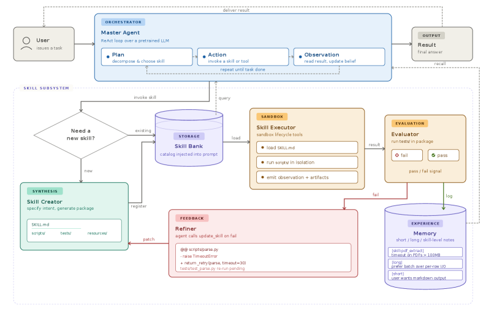
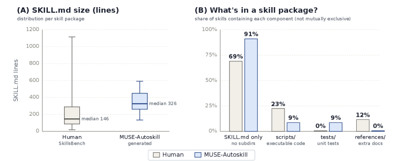

MUSE-Autoskill proposes a skill-centric agent framework that treats skills as long-lived, experience-aware, and testable assets, demonstrating significant gains in task success, efficiency, reuse, and cross-agent transfer on the SkillsBench benchmark.
本文提出MUSE-Autoskill框架，将技能视为长期存在、可测试的资产，并为其设计统一的生命周期（创建、记忆、管理、评估、优化）。在SkillsBench基准上，使用人类技能达到68.40%的准确率，比无技能基线提升15.21个百分点；自生成技能在35个任务上达到87.94%，超越人类技能上限，并成功跨智能体迁移。
Deep Note — muse-autoskill
Key Takeaways - Skills should be treated as long-lived, testable assets with a unified lifecycle (creation, memory, management, evaluation, refinement). - MUSE introduces skill-level memory that accumulates per-skill experience across tasks, improving reuse and adaptation. - MUSE achieves 68.40% accuracy on SkillsBench with human skills, a +15.21 pp lift over its no-skills baseline. - Self-generated skills exceed the human-skill ceiling on 35 tasks (87.94%) and transfer to a different agent with minimal loss (+10.51 pp).
0) Metadata
- Title: MUSE-Autoskill: Self-Evolving Agents via Skill Creation, Memory, Management, and Evaluation
- Alias: muse-autoskill
- Authors: Huawei Lin, Peng Li, Jie Song, Fuxin Jiang, Tieying Zhang
- arXiv ID: 2605.27366
- Published:
- Links:
- Abs: https://arxiv.org/abs/2605.27366
- HTML: https://arxiv.org/html/2605.27366v1
- PDF: https://arxiv.org/pdf/2605.27366
- Tags: llm-agents, skill-lifecycle, self-improvement, skill-memory, cross-agent-transfer
- Domains: ai_safety, system_safety
- Rating: 5/5 (base 1 + quality 2 + observation 2)
1) Why-read
MUSE-Autoskill proposes a skill-centric agent framework that treats skills as long-lived, experience-aware, and testable assets, demonstrating significant gains in task success, efficiency, reuse, and cross-agent transfer on the SkillsBench benchmark.
2) CRGP
C — Context
LLM agents increasingly rely on reusable skills to solve complex tasks, but existing approaches treat skills as isolated and static artifacts, limiting reusability, reliability, and long-term improvement. Prior work like Voyager, AutoSkill, EvoSkill, and SkillGen covers only parts of the skill lifecycle, leaving gaps in creation-usage alignment, per-skill memory, validation, and context handling.
R — Related work
- Voyager: executable-code skill library in Minecraft with self-verification and iterative prompting.
- AutoSkill: model-agnostic plugin layer deriving skills from dialogue and interaction traces.
- EvoSkill: Pareto-frontier selection of skills based on execution failure analysis.
- SkillGen: iterative refinement via contrastive induction over successful/failed trajectories.
- Reflexion, Self-Refine, Self-Debug: feedback-driven self-improvement outside the skill setting.
G — Gap
Existing skill creation approaches treat skills as isolated and static artifacts, lacking a unified lifecycle that includes creation, memory, management, evaluation, and refinement. This leads to a creation-usage mismatch, no structured per-skill memory, static unvalidated skills, and poor context handling for long-horizon tasks.
P — Proposal
MUSE-Autoskill instantiates a unified skill lifecycle with five stages: creation, memory, management, evaluation, and refinement. It introduces skill-level memory that accumulates per-skill experience across tasks, a built-in skill_create tool to eliminate creation-usage mismatch, and an evaluation subsystem with unit tests and runtime feedback for automatic refinement.
---
4) Experiments
Main results
On SkillsBench (51 tasks), MUSE-Autoskill achieves 68.40% accuracy with human skills, a +15.21 pp lift over its no-skills baseline. Self-generated skills on 35 tasks reach 87.94% accuracy, surpassing the human-skill ceiling. Generated skills transferred to Hermes agent raise its accuracy by +10.51 pp, closing 79% of the gap to Hermes with human skills.
Ablation
MUSE-Autoskill with human skills outperforms Codex (67.3%) and Hermes (61.2%) on overall accuracy (68.4%), with the largest lift in the Data Analysis domain (+15.2 pp).
Limitations
['Evaluation is limited to the SkillsBench benchmark; generalizability to other domains or real-world deployments is not yet validated.', 'The framework relies on GPT-5.5 as the backbone; performance with other LLMs is unexplored.', 'Skill creation success rate and quality may vary depending on task complexity and available runtime feedback.']
5) Why it matters
- Provides a principled framework for treating skills as long-lived assets, which is crucial for building agents that continuously improve over time.
- Skill-level memory is a novel contribution that enables experience accumulation across tasks, directly relevant to research on lifelong learning and knowledge retention.
- Cross-agent skill transfer demonstrates that generated skills are externalized knowledge assets, not agent-specific behaviors, supporting modular and reusable agent architectures.
6) Next steps
- [ ] Evaluate MUSE-Autoskill on additional benchmarks (e.g., GAIA, SWE-bench) to assess generalizability.
- [ ] Investigate the impact of different backbone LLMs on skill creation and refinement quality.
- [ ] Explore integration of skill-level memory with other memory architectures (e.g., episodic, semantic) for richer experience accumulation.
- [ ] Study the effect of skill lifecycle management on long-horizon tasks with hundreds of steps.
7) Scoring
5/5 = base 1 + quality 2 + observation 2
MUSE-Autoskill：通过技能创建、记忆、管理和评估实现自我进化的智能体
主要结论 - 技能应被视为长期存在、可测试的资产，并拥有统一的生命周期（创建、记忆、管理、评估、优化）。 - MUSE引入技能级记忆，跨任务累积每个技能的实践经验，提升复用和适应能力。 - 在SkillsBench上，使用人类技能的MUSE达到68.40%准确率，比无技能基线提升15.21个百分点。 - 自生成技能在35个任务上达到87.94%准确率，超越人类技能上限，且迁移到不同智能体后仅损失少量性能（+10.51个百分点）。
1) 阅读理由
MUSE-Autoskill提出了一个以技能为中心的智能体框架，将技能视为长期存在、具备经验感知且可测试的资产，在SkillsBench基准上展示了任务成功率、效率、复用性和跨智能体迁移能力的显著提升。
2) CRGP（背景 / 相关工作 / 差距 / 方案）
背景：LLM智能体越来越依赖可复用的技能来解决复杂任务，但现有方法将技能视为孤立、静态的工件，限制了复用性、可靠性和长期改进。先前的工作如Voyager、AutoSkill、EvoSkill和SkillGen仅覆盖了技能生命周期的部分环节，在创建-使用对齐、技能级记忆、验证和上下文处理方面存在空白。
相关工作：Voyager在Minecraft中构建了可执行代码技能库，具备自我验证和迭代提示；AutoSkill是模型无关的插件层，从对话和交互轨迹中提取技能；EvoSkill基于执行失败分析进行帕累托前沿技能选择；SkillGen通过对比归纳成功/失败轨迹进行迭代优化；Reflexion、Self-Refine、Self-Debug等是技能设定之外的反馈驱动自我改进方法。
差距：现有的技能创建方法将技能视为孤立、静态的工件，缺乏包含创建、记忆、管理、评估和优化的统一生命周期。这导致了创建-使用不匹配、缺乏结构化的技能级记忆、静态未验证的技能，以及长程任务中上下文处理能力差。
提案：MUSE-Autoskill实例化了一个统一的技能生命周期，包含五个阶段：创建、记忆、管理、评估和优化。它引入了技能级记忆，跨任务累积每个技能的实践经验；内置skill_create工具消除创建-使用不匹配；以及包含单元测试和运行时反馈的评估子系统，用于自动优化。
3) 实验
在SkillsBench（51个任务）上，MUSE-Autoskill使用人类技能达到68.40%的准确率，比无技能基线提升15.21个百分点。自生成技能在35个任务上达到87.94%的准确率，超越了人类技能上限。生成的技能迁移到Hermes智能体后，将其准确率提升了10.51个百分点，缩小了与使用人类技能的Hermes之间79%的差距。
消融实验
MUSE-Autoskill使用人类技能在整体准确率（68.4%）上优于Codex（67.3%）和Hermes（61.2%），在数据分析领域提升最大（+15.2个百分点）。
局限性
['评估仅限于SkillsBench基准，尚未验证在其他领域或实际部署中的泛化能力。', '框架依赖GPT-5.5作为骨干模型，未探索与其他LLM的性能表现。', '技能创建的成功率和质量可能因任务复杂性和可用运行时反馈而异。']
4) 重要性
- 提供了一个将技能视为长期资产的原则性框架，这对于构建持续改进的智能体至关重要。
- 技能级记忆是一项新颖贡献，能够跨任务积累经验，直接关系到终身学习和知识保留的研究。
- 跨智能体技能迁移表明，生成的技能是外化的知识资产，而非特定智能体的行为，支持模块化和可复用的智能体架构。
5) 下一步
- [ ] 在更多基准（如GAIA、SWE-bench）上评估MUSE-Autoskill，以检验其泛化能力。
- [ ] 研究不同骨干LLM对技能创建和优化质量的影响。
- [ ] 探索将技能级记忆与其他记忆架构（如情景记忆、语义记忆）集成，以实现更丰富的经验积累。
- [ ] 研究技能生命周期管理对包含数百步的长程任务的影响。


![Figure 4 : Adaptive context compression over a DAG of ReAct turns. Each turn is a ( plan , action , observation ) triple; the first KEEP_FIRST and last KEEP_LAST turns are always pinned and only the middle is eligible for compression. Top → \to Middle: Level-1 rewrites individually oversized turns in place. Middle → \to Bottom: when no single turn is oversized but the chain is still over budget, Level-2 merges the compressible span into one synthetic node. Original turns remain in the full history (linked by immutable history_prev / history_next pointers), so the trajectory is fully replayable.](figures/1312/fig_003.png)
![Figure 5 : Generated skills are Pareto-optimal: higher reward, lower latency, and fewer tokens than human skills (mean over 35 tasks where MUSE-Autoskill generated a skill, 5 runs per task). (A) Mean reward vs. median per-task latency. (B) Mean reward vs. median per-task tokens. Both panels show MUSE-Autoskill (blue) using its own generated skills and Hermes (teal) using those same MUSE-generated skills with no modification. Open circle = without skills; light fill = with human skills (reference); solid fill = with MUSE-generated skills (ours). Arrows show the shift from without skills to with MUSE-generated skill for each agent; the inline label gives ( Δ \Delta reward ⋅ \cdot Δ \Delta cost). Full per-task numbers are in Appendix J .](figures/1312/fig_004.png)
